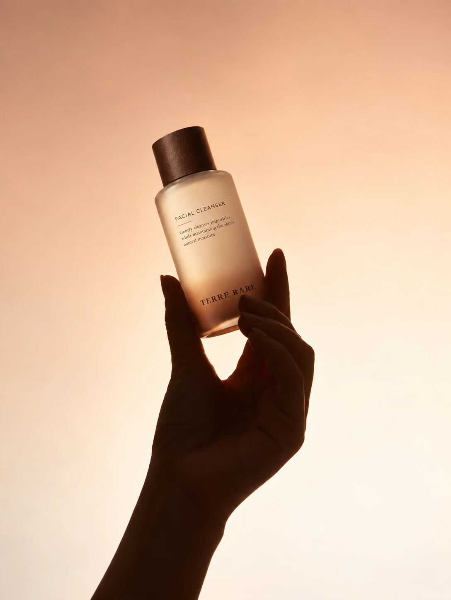

Fingertip Moments — an opening image from the brand campaign.
The human touch brings scale and intimacy to skincare: holding a bottle, opening a jar, pausing for a daily ritual.
This visual series focuses on a single subject at a time. Close framing, generous space and gentle daylight leave room to notice texture, gesture and material.
From gesture to ingredient
Future images will pair hands with confirmed raw ingredients and product textures. Each ingredient image will be identified, so it can be understood as part of a documented story rather than a decorative suggestion.
The series is designed to connect the website journal with the brand’s social visual language. Social channels and further editions will be linked when available.